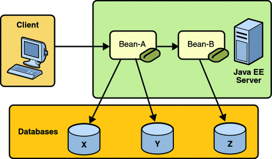

Updating Multiple Databases
The Java EE transaction manager controls all enterprise bean transactions except for bean-managed JDBC transactions. The Java EE transaction manager allows an enterprise bean to update multiple databases within a transaction. The figures that follow show two scenarios for updating multiple databases in a single transaction.
In Figure 33-2, the client invokes a business method in Bean-A. The business method begins a transaction, updates Database X, updates Database Y, and invokes a business method in Bean-B. The second business method updates Database Z and returns control to the business method in Bean-A, which commits the transaction. All three database updates occur in the same transaction.
Figure 33-2 Updating Multiple Databases
In Figure 33-3, the client calls a business method in Bean-A, which begins a transaction and updates Database X. Then Bean-A invokes a method in Bean-B, which resides in a remote Java EE server. The method in Bean-B updates Database Y. The transaction managers of the Java EE servers ensure that both databases are updated in the same transaction.